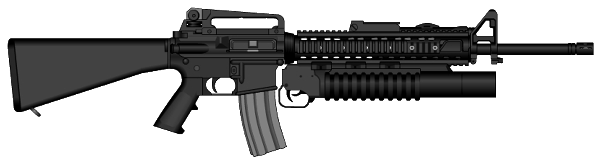
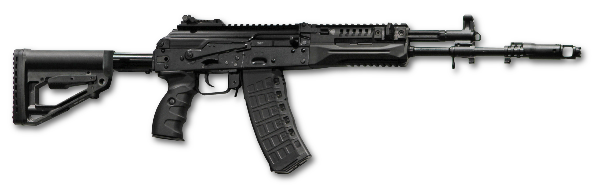
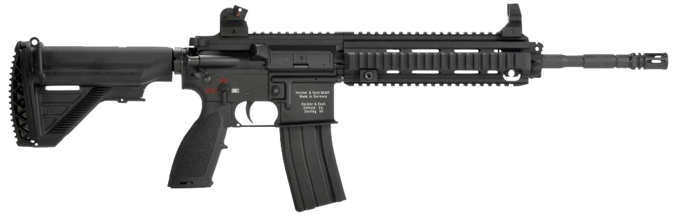
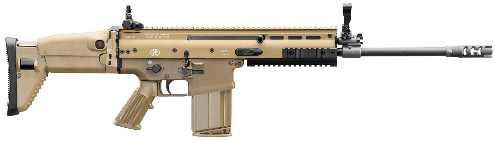
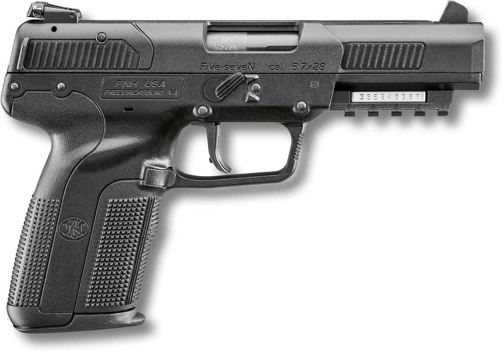
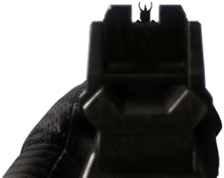
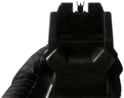

M16A4
M16A4 je moderní varianta původní legendární americké zbraně M16A1 hojně používané během války ve Vietnamu, Iráku, nebo v Perském zálivu. Zde můžete vidět variantu s granátometem M203
Ráže: 5.56x45mm (.223 Remington)
Ve službě: 1963 - dosud
Kadence: 800 ran/min

AK-12
AK-12 je pátou generací legendárních Kalašnikových útočných pušek a nástupce AK-74. Zbraně této generace se vyrábí s 4 nejpoužívanějšími rážemi, ovšem pod jiným označením.
Ráže: 5.45x39mm
Ve službě: 2018 - dosud
Kadence: 650 ran/min

HK416
HK416 je německá útočná puška založená na platformě AR-15 (jako např. M4). Zbraň je navržena a vyráběna německou firmou Heckler & Koch. Zbraň je momentálně používána německou armádou, francouzskými ozbrojenými jednotkami, nebo také US Navy SEAL.
Ráže: 5.56x45mm (.223 Remington)
Ve službě: 2005 - dosud
Kadence: 700-900 ran/min

FN SCAR-H
FN SCAR je rodina automatických útočných pušek vyvinutá belgickou firmou FN Herstal. Vyrábí se ve dvou hlavních verzích, SCAR-L (lehký) a SCAR-H (těžký).
Ráže: 7.62x51mm (.308 Remington)
Ve službě: 2009 - dosud
Kadence: 550-650 ran/min

FN Five-seveN
FN Five-seveN je samonabíjející pistole vyvinutá a vyráběná belgickou firmou FN Herstal. Název zbraně odkazuje jak na svou ráži, tak na svého výrobce.
Ráže: 5.7x28mm
Ve službě: 2000 - dosud
Kadence: 750 ran/min

 
